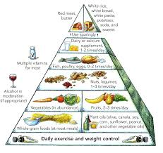

healthy Paradise
-
cookbook
-
products
Healthy food choices are happy food choices
Confused by all the conflicting nutrition advice out there? These simple tips can show you how to plan, enjoy, and stick to a healthy diet.
Eating a healthy diet is not about strict limitations, staying unrealistically thin, or depriving yourself of the foods you love. Rather, it’s about feeling great, having more energy, improving your health, and boosting your mood.
Healthy eating doesn’t have to be overly complicated. If you feel overwhelmed by all the conflicting nutrition and diet advice out there, you’re not alone. It seems that for every expert who tells you a certain food is good for you, you’ll find another saying exactly the opposite. The truth is that while some specific foods or nutrients have been shown to have a beneficial effect on mood, it’s your overall dietary pattern that is most important. The cornerstone of a healthy diet should be to replace processed food with real food whenever possible. Eating food that is as close as possible to the way nature made it can make a huge difference to the way you think, look, and feel.
By using these simple tips, you can cut through the confusion and learn how to create—and stick to—a tasty, varied, and nutritious diet that is as good for your mind as it is for your body.
healthy food pyramid

The Harvard Healthy Eating Pyramid represents the latest nutritional science. The widest part at the bottom is for things that are most important. The foods at the narrow top are those that should be eaten sparingly, if at all.
While some extreme diets may suggest otherwise, we all need a balance of protein, fat, carbohydrates, fiber, vitamins, and minerals in our diets to sustain a healthy body. You don’t need to eliminate certain categories of food from your diet, but rather select the healthiest options from each category.
Protein gives you the energy to get up and go—and keep going—while also supporting mood and cognitive function. Too much protein can be harmful to people with kidney disease, but the latest research suggests that many of us need more high-quality protein, especially as we age. That doesn’t mean you have to eat more animal products—a variety of plant-based sources of protein each day can ensure your body gets all the essential protein it needs.
Fat. Not all fat is the same. While bad fats can wreck your diet and increase your risk of certain diseases, good fats protect your brain and heart. In fact, healthy fats—such as omega-3s—are vital to your physical and emotional health. Including more healthy fat in your diet can help improve your mood, boost your well-being, and even trim your waistline.
Fiber. Eating foods high in dietary fiber (grains, fruit, vegetables, nuts, and beans) can help you stay regular and lower your risk for heart disease, stroke, and diabetes. It can also improve your skin and even help you to lose weight.
Calcium. As well as leading to osteoporosis, not getting enough calcium in your diet can also contribute to anxiety, depression, and sleep difficulties. Whatever your age or gender, it’s vital to include calcium-rich foods in your diet, limit those that deplete calcium, and get enough magnesium and vitamins D and K to help calcium do its job.
Carbohydrates are one of your body’s main sources of energy. But most should come from complex, unrefined carbs (vegetables, whole grains, fruit) rather than sugars and refined carbs. Cutting back on white bread, pastries, starches, and sugar can prevent rapid spikes in blood sugar, fluctuations in mood and energy, and a build-up of fat, especially around your waistline.
Switching to a healthy diet doesn’t have to be an all or nothing proposition. You don’t have to be perfect, you don’t have to completely eliminate foods you enjoy, and you don’t have to change everything all at once—that usually
only leads to cheating or giving up on your new eating plan.
A better approach is to make a few small changes at a time. Keeping your goals modest can help you achieve more in the long term without feeling deprived or overwhelmed by a major diet overhaul. Think of planning a healthy diet as a number of small, manageable steps—like adding a salad to your diet once a day. As your small changes become habit, you can continue to add more healthy choices.
Setting yourself up for success.
To set yourself up for success, try to keep things simple. Eating a healthier diet doesn’t have to be complicated. Instead of being overly concerned with counting calories, for example, think of your diet in terms of color, variety, and freshness. Focus on avoiding packaged and processed foods and opting for more fresh ingredients whenever possible.
Prepare more of your own meals. Cooking more meals at home can help you take charge of what you’re eating and better monitor exactly what goes into your food. You’ll eat fewer calories and avoid the chemical additives, added sugar, and unhealthy fats of packaged and takeout foods that can leave you feeling tired, bloated, and irritable, and exacerbate symptoms of depression, stress, and anxiety.
Make the right changes. When cutting back on unhealthy foods in your diet, it’s important to replace them with healthy alternatives. Replacing dangerous trans fats with healthy fats (such as switching fried chicken for grilled salmon) will make a positive difference to your health. Switching animal fats for refined carbohydrates, though (such as switching your breakfast bacon for a donut), won’t lower your risk for heart disease or improve your mood.
Read the labels. It’s important to be aware of what’s in your food as manufacturers often hide large amounts of sugar or unhealthy fats in packaged food, even food claiming to be healthy.
Focus on how you feel after eating. This will help foster healthy new habits and tastes. The healthier the food you eat, the better you’ll feel after a meal. The more junk food you eat, the more likely you are to feel uncomfortable, nauseous, or drained of energy.
Drink plenty of water. Water helps flush our systems of waste products and toxins, yet many of us go through life dehydrated—causing tiredness, low energy, and headaches. It’s common to mistake thirst for hunger, so staying well hydrated will also help you make healthier food choices.
It’s not just what you eat, but when you eat.
Eat breakfast, and eat smaller meals throughout the day. A healthy breakfast can jumpstart your metabolism, while eating small, healthy meals keeps your energy up all day.
Avoid eating late at night. Try to eat dinner earlier and fast for 14-16 hours until breakfast the next morning. Studies suggest that eating only when you’re most active and giving your digestive system a long break each day may help to regulate weight.
Fruit and vegetables are low in calories and nutrient dense, which means they are packed with vitamins, minerals, antioxidants, and fiber. Focus on eating the recommended daily amount of at least five servings of fruit and vegetables and it will naturally fill you up and help you cut back on unhealthy foods. A serving is half a cup of raw fruit or veg or a small apple or banana, for example. Most of us need to double the amount we currently eat.
To increase your intake:
- Add antioxidant-rich berries to your favorite breakfast cereal
- Eat a medley of sweet fruit—oranges, mangos, pineapple, grapes—for dessert
- Swap your usual rice or pasta side dish for a colorful salad
- Instead of eating processed snack foods, snack on vegetables such as carrots, snow peas, or cherry tomatoes along with a spicy hummus dip or peanut butter